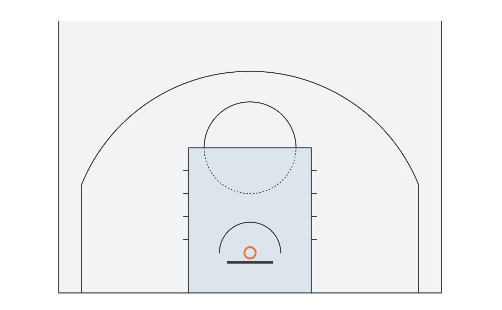
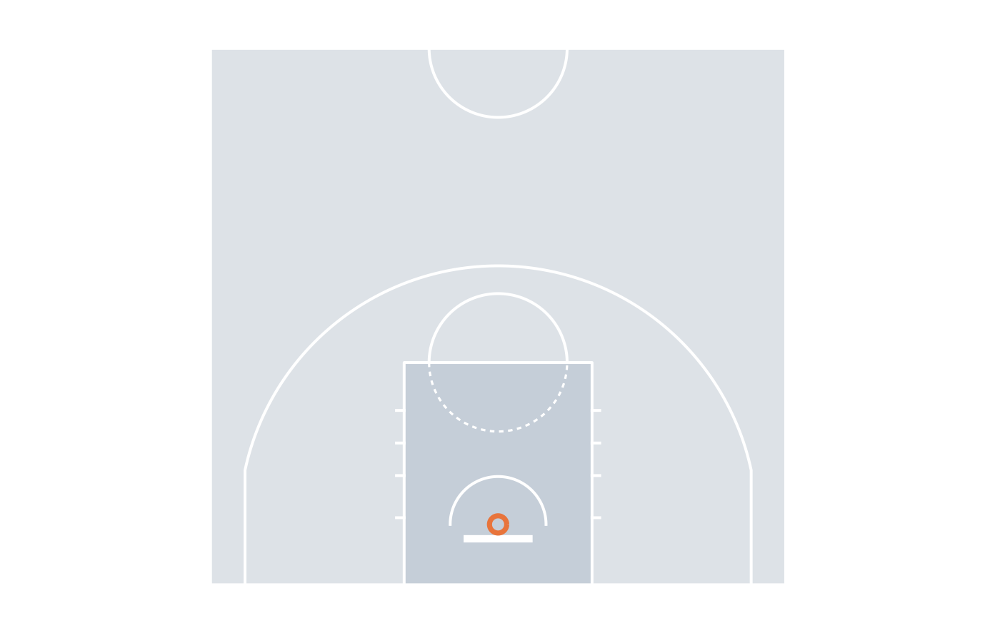

Adds the floor, the painted key, the court lines and the rim to a plot,
plus a fixed-ratio coordinate system cropped to the half court. Put it
first so data layers are drawn on top, then add annotate_court_lines()
after the data layers to keep the lines visible.
Arguments
- league
"NBA","FIBA"or"EuroLeague".- style
"painted","arena"or"minimal".- colour, linewidth
Line colour and width (default: from
style).- floor
Floor colour (default: from
style), orNAfor none.- ylim
Visible depth of the court in metres from the hoop. The default stops just past the top of the arc, where almost all shots are; use
c(-1.75, 12.6)for the whole half court.- coord
Add
ggplot2::coord_fixed()with court limits.- alpha
Line opacity (lower it when lines are drawn over data).
Details
Three looks, set per call or for the session with
options(ggbasket.court = "..."):
"painted"(default): light cool-grey floor, blue-grey key, dark lines, orange rim;"arena": darker floor with white lines, like a broadcast graphic;"minimal": lines only, on a near-white floor.
Examples
library(ggplot2)
#> Warning: package ‘ggplot2’ was built under R version 4.5.2
ggplot() + geom_court("NBA") + theme_court()

ggplot() + geom_court("EuroLeague", style = "arena", ylim = c(-1.75, 12.6)) + theme_court()
